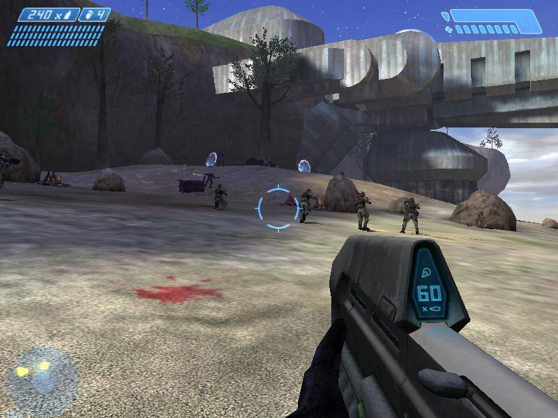
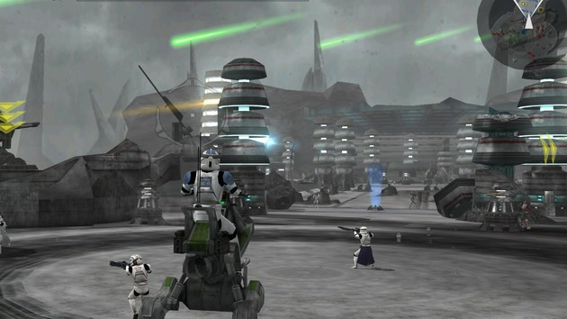
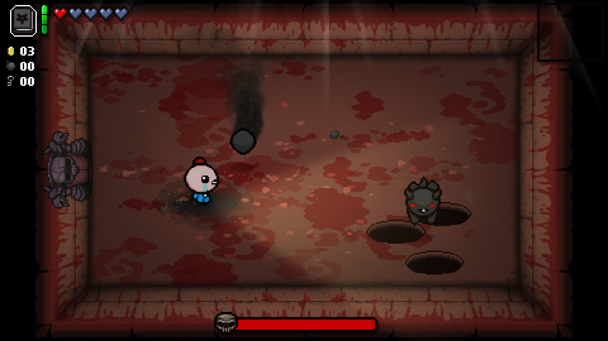
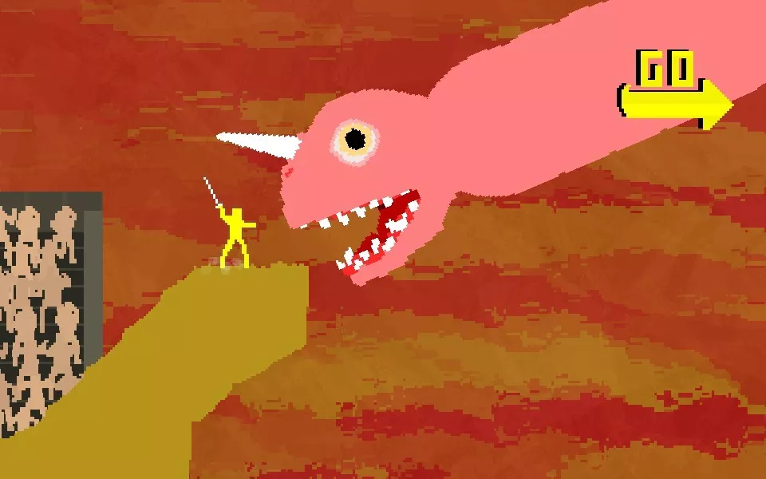

Downloads
Download Halo CE
Size: 102 MB (107,315,384 bytes)
Size on disk: 102 MB (107,319,296 bytes)

Installation Instructions
1. Download file from one of the two download links above.
2. Simply move the file to preferred location and run. The file will automatically extract and run.
Download Battlefront II
Size: 627 MB (657,466,910 bytes)
Size on disk: 627 MB (657,469,440 bytes)

Installation Instructions
1. Download file from one of the two download links above.
2. Unzip file.
3. Navigate to: Star wars battlefront 2 => GameData.
4. Run 'BattlefrontII.exe'.
Download The Binding of Isaac: Afterbirth
Size: 462 MB (485,354,605 bytes)
Size on disk: 462 MB (485,355,520 bytes)

Installation Instructions
1. Download file from one of the two download links above.
2. Extract file.
3. Run 'isaac-ng.exe'.
Download Nidhogg
Size: 60.9 MB (63,874,565 bytes)
Size on disk: 60.9 MB (63,877,120 bytes)

Installation Instructions
1. Download file from one of the two download links above.
2. Extract file.
3. Run 'Nidhogg.exe'.